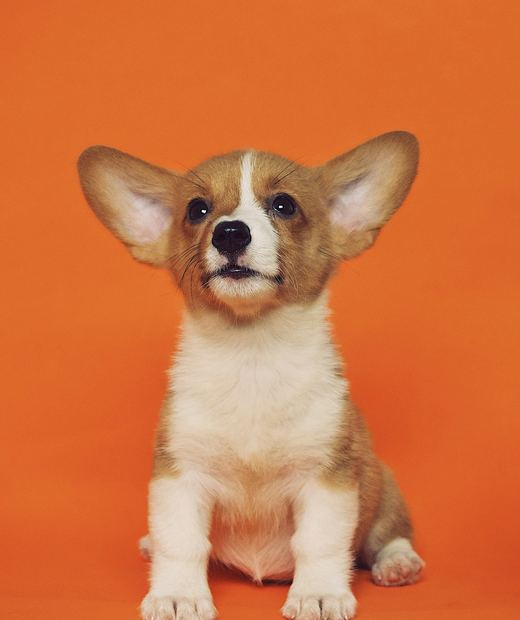
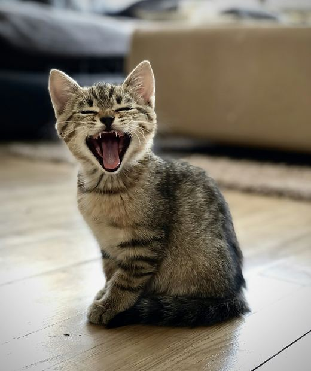
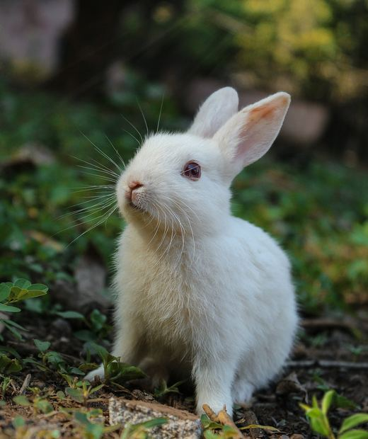
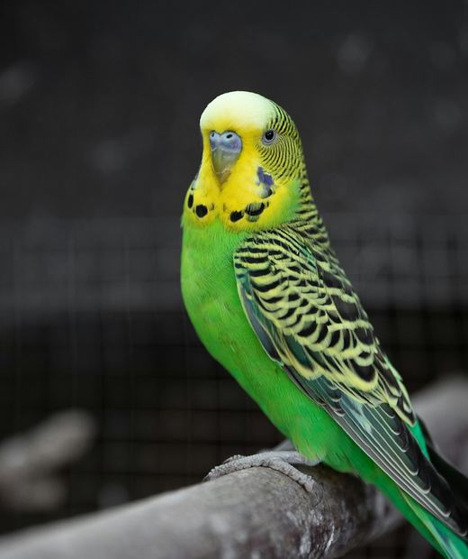
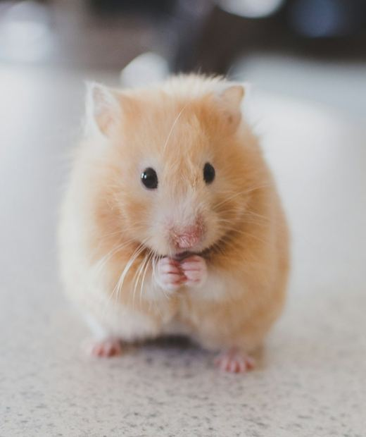
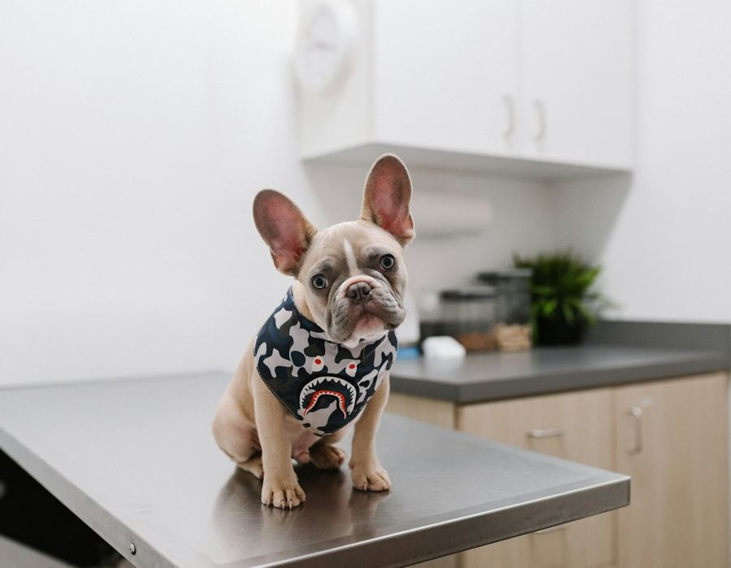
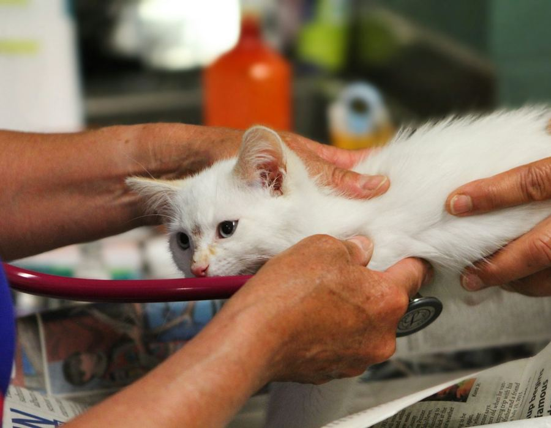
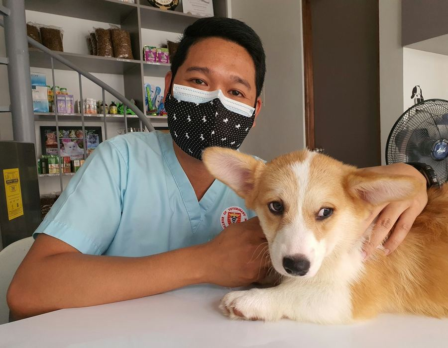
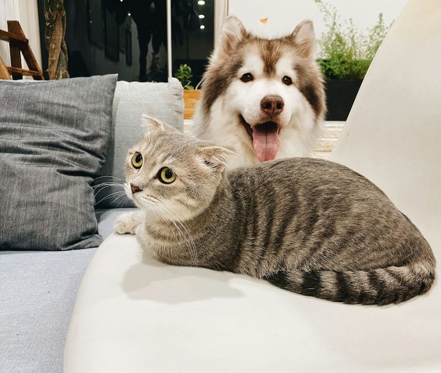

La clínica en números
Atendemos a toda la familia
Perros, gatos y también mascotas pequeñas, cada una con su propio cuidado.

PerrosVacunas, controles y baño 
GatosTriple felina y leucemia 
ConejosMixomatosis y dientes 
AvesPico y plumaje 
RoedoresHámsters y cuyes
Servicios y precios
Precios por atención, en soles. Pagas al terminar.
Consulta general
Evaluación y diagnóstico: peso, temperatura y examen completo.
S/ 50Vacunación
Antirrábica, séxtuple, óctuple, triple felina, leucemia felina, bordetella y mixomatosis.
S/ 40 a 75 según vacunaDesparasitación
Interna y externa, según la especie y el peso. Se repite cada 3 meses.
S/ 30Emergencias
Intoxicaciones, heridas y fracturas. Sin cita: pasas primero.
S/ 120Cirugía menor
Extracción de quistes y limpieza dental, con control posterior.
S/ 250Control post tratamiento
Revisamos cómo evoluciona tu mascota después de un tratamiento.
S/ 35Baño y corte
Baño, corte de pelo y de uñas para que se vea y se sienta bien.
S/ 45
Si la cita se cancela, no se cobra nada.
¿Cuándo toca su próxima vacuna?
Calcula la fecha del refuerzo anual y resérvalo con tiempo.

Trabajamos con MSD Salud Animal, Zoetis, Boehringer Ingelheim e Hipra.

Quiénes te atienden
Tres médicos veterinarios colegiados y dos recepcionistas. Cada mascota tiene su historial clínico, así cualquiera de nosotros sabe lo que necesita.
- LVLucía Vargas ParedesCirugíaCMVP-03471
- CMCarlos Mendoza RíosMedicina internaCMVP-02150
- JSJorge Salazar TelloMedicina generalCMVP-05128
Misión
Cuidar la salud de las mascotas de Trujillo con atención cercana y un historial clínico ordenado.
Visión
Ser la clínica de confianza del barrio, donde cada visita continúa la anterior.
Valores
Respeto por los animales, trato claro con las familias y responsabilidad en cada atención.
Así es una cita
Sin cruces de horario y sin fichas perdidas.
Reservas
Escríbenos por WhatsApp o llama. Te damos día, hora y veterinario.
Te registramos
Solo la primera vez, con tu DNI y los datos de tu mascota.
Consulta
Peso, temperatura, revisión y diagnóstico. El tratamiento te lo damos por escrito.
Seguimiento
Pagas al terminar y programamos el control o el próximo refuerzo.
Preguntas frecuentes
¿Atienden emergencias sin cita?
Sí. Intoxicaciones, heridas y fracturas pasan primero. La atención de emergencia cuesta S/ 120.
¿Qué llevo en la primera visita?
Tu DNI, para registrarte una sola vez, y el carnet de vacunas de tu mascota si lo tienes.
¿Cuándo se paga?
Al terminar la atención. Si la cita se cancela, no se cobra nada.
¿Puedo cambiar la hora de mi cita?
Sí. Escríbenos o llama a recepción y la reprogramamos.
¿Quién ve el historial de mi mascota?
Solo los veterinarios. Recepción ve tus datos de contacto y tus citas, no los diagnósticos.
¿Atienden conejos, aves y hámsters?
Sí. Si tu mascota es de otra especie, llámanos antes para confirmar.
Agenda tu cita hoy
- WhatsApp y teléfono944 000 123
- HorarioLunes a sábado, de 9:00 a 19:00
- DirecciónTrujillo, La Libertad
